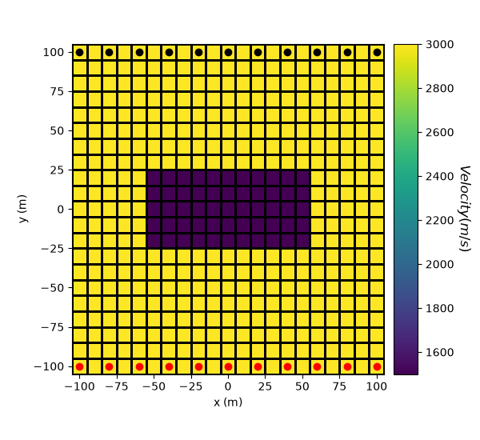
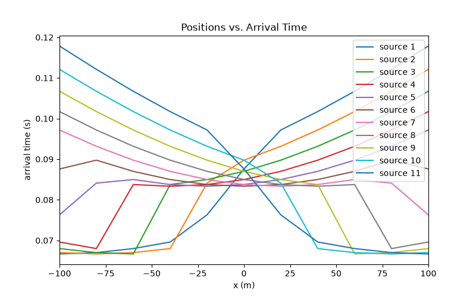

Note
Go to the end to download the full example code.
Forward Simulation for Straight Ray Tomography in 2D#
Here we module simpeg.seismic.straight_ray_tomography to predict arrival time data for a synthetic velocity/slowness model. In this tutorial, we focus on the following:
How to define the survey
How to define the forward simulation
How to predict arrival time data
Import Modules#
import os
import numpy as np
import matplotlib as mpl
import matplotlib.pyplot as plt
from discretize import TensorMesh
from simpeg import maps
from simpeg.seismic import straight_ray_tomography as tomo
from simpeg.utils import model_builder
save_file = False
Defining the Survey#
Here, we define survey that will be used for the forward simulation. The survey consists of a horizontal line of point receivers at Y = 100 m and a horizontal line of point sources at Y = -100 m. The shot by each source is measured by all receivers.
# Define the locations for the sources and receivers.
x = np.linspace(-100, 100, 11)
y_receivers = 100 * np.ones(len(x))
y_sources = -100 * np.ones(len(x))
receiver_locations = np.c_[x, y_receivers]
source_locations = np.c_[x, y_sources]
# Define the list of receivers used by each source
receiver_list = [tomo.Rx(receiver_locations)]
# Define an empty list to store sources objects. Define each source and
# provide its corresponding receivers list
source_list = []
for ii in range(0, len(y_sources)):
source_list.append(
tomo.Src(location=source_locations[ii, :], receiver_list=receiver_list)
)
# Define they tomography survey
survey = tomo.Survey(source_list)
Defining a Tensor Mesh#
Here, we create the tensor mesh that will be used to predict arrival time data.
Model and Mapping on Tensor Mesh#
Here, we create the velocity model that will be used to predict the data. Since the physical parameter for straight ray tomography is slowness, we must define a mapping which converts velocity values to slowness values. The model consists of a lower velocity block within a higher velocity background.
# Define velocity of each unit in m/s
background_velocity = 3000.0
block_velocity = 1500.0
# Define the model. Models in SimPEG are vector arrays.
model = background_velocity * np.ones(mesh.nC)
ind_block = model_builder.get_indices_block(np.r_[-50, 20], np.r_[50, -20], mesh.gridCC)
model[ind_block] = block_velocity
# Define a mapping from the model (velocity) to the slowness. If your model
# consists of slowness values, you can use *maps.IdentityMap*.
model_mapping = maps.ReciprocalMap()
# Plot Velocity Model
fig = plt.figure(figsize=(6, 5.5))
ax1 = fig.add_axes([0.15, 0.15, 0.65, 0.75])
mesh.plot_image(model, ax=ax1, grid=True, pcolor_opts={"cmap": "viridis"})
ax1.set_xlabel("x (m)")
ax1.set_ylabel("y (m)")
ax1.plot(x, y_sources, "ro") # source locations
ax1.plot(x, y_receivers, "ko") # receiver locations
ax2 = fig.add_axes([0.82, 0.15, 0.05, 0.75])
norm = mpl.colors.Normalize(vmin=np.min(model), vmax=np.max(model))
cbar = mpl.colorbar.ColorbarBase(
ax2, norm=norm, orientation="vertical", cmap=mpl.cm.viridis
)
cbar.set_label("$Velocity (m/s)$", rotation=270, labelpad=15, size=12)

/home/vsts/work/1/s/tutorials/12-seismic/plot_fwd_1_tomography_2D.py:97: BreakingChangeWarning: Since SimPEG v0.25.0, the 'get_indices_block' function returns a single array with the cell indices, instead of a tuple with a single element. This means that we don't need to unpack the tuple anymore to access to the cell indices.
If you were using this function as in:
ind = get_indices_block(p0, p1, mesh.cell_centers)[0]
Make sure you update it to:
ind = get_indices_block(p0, p1, mesh.cell_centers)
To hide this warning, add this to your script or notebook:
import warnings
from simpeg.utils import BreakingChangeWarning
warnings.filterwarnings(action='ignore', category=BreakingChangeWarning)
ind_block = model_builder.get_indices_block(np.r_[-50, 20], np.r_[50, -20], mesh.gridCC)
Simulation: Arrival Time#
Here we demonstrate how to predict arrival time data for the 2D straight ray tomography problem using the 2D Integral formulation.
Plotting#
n_source = len(source_list)
n_receiver = len(x)
dpred_plotting = dpred.reshape(n_receiver, n_source)
fig = plt.figure(figsize=(8, 5))
ax = fig.add_subplot(111)
obs_string = []
for ii in range(0, n_source):
ax.plot(x, dpred_plotting[:, ii])
obs_string.append("source {}".format(ii + 1))
ax.set_xlim(np.min(x), np.max(x))
ax.set_xlabel("x (m)")
ax.set_ylabel("arrival time (s)")
ax.set_title("Positions vs. Arrival Time")
ax.legend(obs_string, loc="upper right")

<matplotlib.legend.Legend object at 0x7fb829ad3c90>
Optional: Exporting Results#
Write the data and true model
if save_file:
dir_path = os.path.dirname(tomo.__file__).split(os.path.sep)[:-3]
dir_path.extend(["tutorials", "seismic", "assets"])
dir_path = os.path.sep.join(dir_path) + os.path.sep
noise = 0.05 * dpred * np.random.randn(len(dpred))
data_array = np.c_[
np.kron(x, np.ones(n_receiver)),
np.kron(y_sources, np.ones(n_receiver)),
np.kron(np.ones(n_source), x),
np.kron(np.ones(n_source), y_receivers),
dpred + noise,
]
fname = dir_path + "tomography2D_data.obs"
np.savetxt(fname, data_array, fmt="%.4e")
output_model = model
fname = dir_path + "true_model_2D.txt"
np.savetxt(fname, output_model, fmt="%.4e")
Total running time of the script: (0 minutes 5.423 seconds)
Estimated memory usage: 332 MB